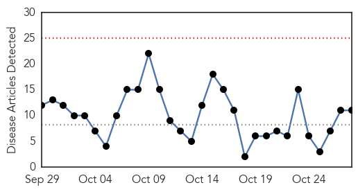
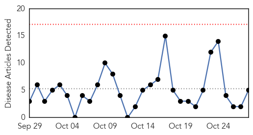

Influenza
30-Day Web Trend
0 alerts, 0 warnings

30-Day Twitter Trend
1 alerts, 0 warnings

Article Locations

Article Confidences
Top Articles:
- 0.999
- Two strains of flu found in Kanawha County
- 0.999
- Influenza Update – 2014
- 0.999
- Iowa health officials already seeing two strains of flu
- 0.979
- Two strains of flu hit Kanawha Valley
- 0.949
- Sudbury residents rolling up their sleeves to stay influenza-free
- 0.947
- Miller County students get Flu vaccines and education about the
- 0.883
- No mandatory flu shots for nurses across Ont
- 0.866
- Imaxio awarded ANR funding to improve efficacy of vaccines for seasonal influenza
- 0.828
- Myths prevent many from getting flu shots, says expert
- 0.730
- There’s a Virus Living in Your Throat That Could Sap Your Brain Power
- 0.538
- MinuteClinic and Lifespan Agree to Clinical Collaboration in Rhode Island
Top Tweets:
-
No tweets found for Oct 28, 2014
Cholera
30-Day Web Trend
0 alerts, 0 warnings

30-Day Twitter Trend
9 alerts, 0 warnings

Article Locations

Article Confidences

Top Articles:
Top Tweets:
-
No tweets found for Oct 28, 2014